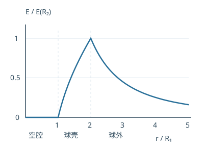

大学物理教材习题 10：真空中的静电场
按题号查看目录 （点击展开）
- 10-1 四个点电荷的合力
- 10-2 两个带电小球
- 10-3 直角三角形中的场强
- 10-4 电四极子远场
- 10-5 均匀细线延长线上的电场
- 10-6 线密度不均匀的细棒
- 10-7 半圆两半带异号电荷
- 10-8 两根无限长异号带电直线
- 10-9 两无限大带电平面
- 10-10 带圆孔的无限大平面
- 10-11 带窄缺口的圆弧
- 10-12 立方体电通量
- 10-13 均匀场穿过半球面
- 10-14 氢原子的球对称电荷云
- 10-15 大气平均电荷密度
- 10-16 均匀带电厚球壳
- 10-17 两同轴无限圆柱面
- 10-18 挖空带电球
- 10-19 改变电势零点
- 10-20 球面和细线的相互作用能
- 10-21 电四极子远处的电势
- 10-22 均匀圆环中心电势
- 10-23 均匀细杆延长线上的电势
- 10-24 直线与半圆组合
- 10-25 两同心带电球面电势
- 10-26 球对称非均匀体电荷
- 10-27 两球面等面电荷密度
- 10-28 同心球面间的动能
- 10-29 沿半圆移动的电场力做功
- 10-30 两质子的经典接近估计
- 10-31 带电细棒的电势与场强分量
对应教材下册第 36—39 页。先独立画图、写明正方向，再对照解法。记 k=1/(4πε₀)≈8.99×10⁹ N·m²/C²；除特别说明，电势零点取无穷远。本页31题已复看扫描并逐题重新推导，重点积分、数值、边界与极限已有独立交叉计算。解答为独立整理，未见出版社答案，不称官方核对。10-4/10-11/10-27等记号或操作歧义仍保留说明。
10-1 四个点电荷的合力
题给四电荷均q=10⁻⁶C；位置 2、4 相对位置 3 对称，电荷相同，作用在 3 上的力大小相等、方向相反，互相抵消。只剩原点位置 1 的力。距离 r=√[(0.5 m)²+(0.5 m)²]=1/√2 m，故 F=kq²/r²≈1.80×10⁻² N，方向从原点指向 3，与 x、y 正方向各成 45°；两个分量约均为 1.27×10⁻² N。
10-2 两个带电小球
左右对称时两球距离 d=2l sinθ。对任一球，竖直方向 T cosθ=mg，水平方向 T sinθ=kq²/d²。两式相除得 mg tanθ=kq²/(4l²sin²θ)，所以 q=2l sinθ√(mg tanθ/k)。这是把小球近似为点电荷、细线质量可忽略的模型。
10-3 直角三角形中的场强
题给qA=+1.8×10⁻⁹C、qB=−4.8×10⁻⁹C。C 点距 A 为 0.03 m、距 B 为 0.04 m，两电场互相垂直。正电荷 A 的场沿 A→C，大小 E₁=k(1.8×10⁻⁹)/0.03²≈1.80×10⁴ N/C；负电荷 B 的场由 C 指向 B，大小 E₂≈2.70×10⁴ N/C。合场大小 √(E₁²+E₂²)≈3.24×10⁴ N/C，方向由上述两个分量共同确定，与 A→C 的夹角约 56.3°，朝 C→B 一侧。
10-4 电四极子远场
把中央 −2q 置于原点，两端 +q 在 x=±l，P 在 x=r>l。精确轴向场为 E=kq[(r−l)⁻²+(r+l)⁻²−2r⁻²]。当 r≫l，二项式展开 (1±l/r)⁻²≈1∓2l/r+3l²/r²，常数项与一次项抵消，得到 E≈6kql²/r⁴。按 Q=2ql² 定义四极矩，E≈3kQ/r⁴，方向沿轴向远离中心（q>0）。这是远场近似，不是任意 r 的精确值。
记号说明：扫描教材在四极矩定义处印有 Q＝2qrₑ²，但题干所定义的间距记号是 l，未解释 rₑ。这里按图中每个正电荷距中心为 l，推导得到 Q＝2ql²；不能确定原书该处的记号是否为排印错误。
10-5 均匀细线延长线上的电场
细线位于−l≤x≤l，总电荷q，观察点P坐标a>l。电荷元dq=λdx，λ=q/(2l)，到P的距离a−x；电场沿x轴，用有符号分量积分：
=kλ[1/(a−l)−1/(a+l)]
=kq/(a²−l²)。
q>0时沿+x，q<0时反向。a≫l退为点电荷场kq/a²；a趋l时理想无粗细线的场发散，不能直接用于接触真实线端的尺度。
10-6 线密度不均匀的细棒
棒从x=0到2l，λ=Ax，A>0；观察点L=b+2l，b>0。这里A单位C/m²，使Ax为线密度C/m。电荷元dq=Ax dx，各元到P距离L−x。
令u=L−x，则x=L−u，
Ex=kA∫从b到L (L/u²−1/u)du
=kA[L/b−1−ln(L/b)]。
场沿+x；对数内L/b无量纲。令L/b=t>1，则t−1−ln t>0，方向符合正电荷在P左方。b≫l时场应接近总电荷2Al²产生的远场，不能将线密度取常数A。
10-7 半圆两半带异号电荷
右半四分之一圆弧总电荷 +q，左半为 −q，线密度绝对值 2q/(πR)。关于竖直轴配对后竖直分量抵消，水平分量都指向左边。沿角度积分得 E=4kq/(πR²)，方向由右侧正电荷指向左侧负电荷。
积分细节：取通常向右的水平轴，右半圆弧上从水平轴起的角度 θ 为 0 到 π/2。电荷元 dq＝λR dθ，在圆心的水平分量为 −kλ cosθ dθ/R。右半积分得 −kλ/R；左半负电荷的水平分量同样向左，大小也为 kλ/R。竖直分量互相抵消，合场大小为 2kλ/R＝4kq/(πR²)。教材图中的 x 正向朝左，故按教材坐标合场的 x 分量为正。
10-8 两根无限长异号带电直线
两无限线分别位于x=−d/2和+d/2，线密度+λ/−λ（λ>0）。取中垂面点P=(0,y)，到两线距离s=√(y²+d²/4)。每线场大小E₀=λ/(2πε₀s)。
平行中垂面的分量互相抵消，从正线指向负线的分量同向，各为E₀(d/2)/s，因此
一条线单位长度受力只计另一条线产生的场：f=λ·λ/(2πε₀d)=λ²/(2πε₀d)，相互吸引。不要把自身场计入受力，也不要把单线场的两个斜分量直接按大小相加。
10-9 两无限大带电平面
取由左向右为正。单个无限大带电平面两侧的场强大小 |σ|/(2ε₀)，正面电荷向外、负面电荷向内。两平面叠加后：区域 I：Ex=σ/(2ε₀)；区域 II：Ex=3σ/(2ε₀)；区域 III：Ex=−σ/(2ε₀)。符号说明方向，结果不适用于有限平面边缘附近。
逐区叠加：以 σ/(2ε₀) 为单位，左侧正平面在 I、II、III 区的分量依次为 −1、+1、+1；右侧负平面的分量依次为 +2、+2、−2。逐项相加得到 +1、+3、−1。这里 σ 表示题中正数，负号已包含在第二个平面的面电荷密度中。
10-10 带圆孔的无限大平面
面密度σ的无限平面挖半径R圆孔。P在孔轴上、离平面r>0。把它写成“完整平面−同面密度圆盘”。圆盘各环电量σ2πs ds，轴向分量为kσ2πs r ds/(r²+s²)³ᐟ²，积s从0到R：
E孔=σ/(2ε₀)−E盘
=σr/[2ε₀√(r²+R²)]。
σ>0时由平面指向P；另一侧方向相反。r趋0时孔心场0，r≫R时趋完整平面场。也可直接把剩余面分成半径R到∞的环积分，独立得到同一式。
10-11 带窄缺口的圆弧
题给不导电棒正电荷q=3.12×10⁻⁹C，弯曲半径R=0.50m，两端空隙2cm。这里按端点直线距离（弦长）取缺口半角α=arcsin[0.02/(2R)]=arcsin(0.02)≈0.0200013rad；若理解为弧长，末位有微小差别，保留这一题意口径。
棒是剩余圆弧，故λ=q/[R(2π−2α)]≈9.995×10⁻¹⁰C/m，不是q/(2πR)。假想用同λ补齐整圆，其中心场0；余弧场等于缺弧场的反向。
=2kλsinα/R；
E余≈0.719N/C，指向缺口。
两侧分量配对消去，只有缺口轴向分量。棒所带总电荷与假想完整圆所带总电荷不同，这是原式最容易错的归一化。
10-12 立方体电通量
- 电荷在中心，六个面完全等价，总通量 q/ε₀，所以每面 q/(6ε₀)。
- 电荷在顶点，将 8 个相同小立方体拼成大立方体，使电荷位于大立方体中心。大立方体每个大面的通量 q/(6ε₀)，每个大面分成 4 个等价小面，故三个不含该顶点的面各为 q/(24ε₀)。三个包含电荷顶点的面上，除顶点奇点外电场沿面，通常按去掉奇点的曲面积分各为 0。电荷恰在边界时不能直接把它当成严格处在封闭面内部。
10-13 均匀场穿过半球面
给半球曲面补上底圆构成闭合面，内部无电荷，故曲面通量等于底圆通量的相反数。大小 |Φ|=EπR²。若场沿半球轴向从底面指向球顶，取曲面外法线则 Φ=+EπR²；反向时为负。
10-14 氢原子的球对称电荷云
氢模型核电荷+e，电子云ρ(s)=−Cexp(−2s/a₀)，a₀=0.53×10⁻¹⁰m。先按总电子电荷−e确定C：
∫从0到∞s²e−2s/a₀ds=a₀³/4；
C=e/(πa₀³)。
对半径r内电子云积分，再加核电荷，令x=r/a₀：
Q净(r)=e·e−2x(1+2x+2x²)；
Q净(a₀)=5e·e⁻²≈0.6767e；
E(a₀)=kQ净(a₀)/a₀²
≈3.47×10¹¹N/C，径向向外。
总原子中性不等于每个有限高斯球都包围净电荷0。电子云延伸到a₀外，故a₀内仍有正净电荷；r趋∞时净包围电荷才趋0。
10-15 大气平均电荷密度
取竖直向上为正，200 m 处 Ez=−100 N/C，300 m 处 Ez=−50 N/C。水平变化忽略时，∇·E≈ΔEz/Δz=(−50+100)/100=0.5 N/(C·m)。因此 ρ平均≈ε₀×0.5≈4.43×10⁻¹² C/m³。正负号来自矢量方向，不是把两个场强大小直接相减。
用薄柱检查符号：设水平截面积为 S，柱底在 200 m、顶在 300 m，侧面的通量在场近似竖直时为零。顶面外法线向上、底面外法线向下，总通量为 (−50)S−(−100)S＝50S。由高斯定理，柱内平均电荷密度为 ε₀·50S/(100S)，与上式一致。此结果依赖所选区域内电场近似竖直且可用给定高度的场代表柱面，不能仅凭两点大小判断任意三维电场的局部密度。
10-16 均匀带电厚球壳
均匀绝缘厚球壳，内外半径R₁/R₂，总电量Q，体密度ρ=3Q/[4π(R₂³−R₁³)]。由球对称与高斯定律，Eᵣ4πr²=Q内/ε₀：
- r<R₁：Q内=0，E=0；
- R₁<r<R₂：Q内=ρ4π(r³−R₁³)/3，Eᵣ=kQ(r³−R₁³)/[(R₂³−R₁³)r²]；
- r>R₂：包围全部Q，Eᵣ=kQ/r²。
另一方法将厚壳分成许多薄球面：半径小于r的球面对外等效点电荷，半径大于r的球面内部场0。只需把R₁到min(r,R₂)的电量加起来，同样得到Q内，故两方法一致。Q>0场向外，Q<0向内。
E在两边界连续；空腔中0、壳内单调增大，到外表面后按1/r²衰减。图取R₂=2R₁、正Q；半径比改变时曲线形状相应改变，不能照图读取任意球壳的具体数值。

10-17 两同轴无限圆柱面
取同轴高斯圆柱，侧面积 2πrL。依次包围电荷 0、λ₁L、(λ₁+λ₂)L，故三个区域的径向分量分别为 0、λ₁/(2πε₀r)、(λ₁+λ₂)/(2πε₀r)。正号向外，负号向内；圆柱面本身两侧极限可不同。
10-18 挖空带电球
大球半径R、密度ρ，挖去半径a的偏心小球，位移O→O′记d（向量），整个空腔包含于大球。用完整ρ大球减同密度小球，空腔点位置向量r满足
=ρd/(3ε₀)。
所以O、O′若如图均在空腔内，场相同且均匀；ρ>0时沿O→O′。空腔不与大球同心，不能对空腔随意套球对称高斯求场。
图中P、P′在O左边。沿O→O′取+x，令OO′=d、OP=s、OP′=t，P在大球内/小球外（s<R、s+d>a），P′在两球外（t>R）：
Ex(P′)=ρ[−R³/t²+a³/(t+d)²]/(3ε₀)。
距离未给，保留可代入的符号式；不要擅自将示意图长度当数据。其他位置可用均匀球通式：球内ρr/(3ε₀)，球外ρa³r/(3ε₀|r|³)，分别以各球心为位矢起点叠加。
10-19 改变电势零点
原先以无穷远为零时 V=kq/r。改以 B 为零，就是所有电势减去 kq/0.20。于是 VA=kq(1/0.10−1/0.20)≈44.9 V；VC=kq(1/0.30−1/0.20)≈−15.0 V。电势零点改变不影响电势差与电场。
10-20 球面和细线的相互作用能
题设均匀球面半径R带Q，径向细线长l、线密度λ，近端距心l、远端2l；图示细线在球外，要求l≥R，且电荷分布固定。
U相互=∫从l到2l V球(r)λdr
=kQλln2。
这是球—线的相互作用能，不含各自自能；没有1/2，因为每一对跨球/线的电荷只算了一次。同号为正、异号为负。若线有部分进入球面内，用球内常势kQ/R与球外势分段；若球面是会重新分布电荷的导体而非题给固定分布，须重判边界，不能沿用。
10-21 电四极子远处的电势
中央−2q、两端+q，正负间距l，P距中心r、与轴夹角θ。设c=cosθ，r≫l，精确势为三项点源之和：
+1/√(r²+l²+2rlc)−2/r]。
将两个平方根倒数分别展开为r⁻¹[1±(l/r)c+(l/r)²(3c²−1)/2+…]。两正电荷相加时一次项抵消，常数项又与中央−2q的势抵消，留下
θ=0给2kql²/r³，沿轴对r取负导数得6kql²/r⁴，与10-4一致。θ=90°势为负；3cos²θ−1=0时只表示本阶项0，精确势仍可能有更高阶项，不能宣称该方向上完全无势。
10-22 均匀圆环中心电势
环半径设为 R，总电量 2πRλ，所有电荷元距中心均为 R，所以 V=k(2πRλ)/R=2πkλ=λ/(2ε₀)。这是以无穷远为电势零点时的结果；环心场强虽为零，电势通常不为零。
10-23 均匀细杆延长线上的电势
λ=q/(2l)。离 P 最近端为 a、最远端为 a+2l，积分 V=kλ∫ₐᵃ⁺²ˡ ds/s，得 V=[kq/(2l)]ln[(a+2l)/a]，其中 a>0。
10-24 直线与半圆组合
两直段与半圆均有线密度λ>0，半圆半径R，两直段各长R。取O为原点、y向上，两直段位于x的−2R到−R和R到2R，场等大反向抵消；半圆水平分量抵消。
=−2kλ/R，向下；
V半圆=∫kλR dθ/R=πkλ；
V每直段=∫从R到2R kλds/s=kλln2；
V(O)=kλ(π+2ln2)。
无穷远势取0。电势是标量，三段直接相加；场是向量，不能先相加三个场的大小。半圆处处到O等距，直线处不能用一个统一距离代替积分。
10-25 两同心带电球面电势
设 R₁<R₂。单个均匀球面在内部电势是 kq/R，在外部是 kq/r；标量叠加：
- r<R₁：V=k(q₁/R₁+q₂/R₂)。
- R₁<r<R₂：V=k(q₁/r+q₂/R₂)。
- r>R₂：V=k(q₁+q₂)/r。
球面上电势连续，跨过带电球面时电场可以跳变。
10-26 球对称非均匀体电荷
球半径R，内部ρ(r)=qr/(πR⁴)，球外ρ=0，题给q>0。把积分变量另记s，免与观察点混淆：
=qr⁴/R⁴；
Q总=Q内(R)=q。
由高斯定律，Eᵣ=kqr²/R⁴（r≤R），Eᵣ=kq/r²（r≥R）。均径向向外。无穷远V=0，球外势kq/r，表面V(R)=kq/R；球内：
=kq/R+(kq/R⁴)(R³−r³)/3
=kq[4/(3R)−r³/(3R⁴)]。
两侧在R处E和V都连续；球心E=0而V=4kq/(3R)，不能把二者混淆。也可按每个薄球面内外的常势/点势分区积分独立核验。
10-27 两球面等面电荷密度
两个同心球面半径R₁=0.10m、R₂=0.20m，同面密度σ，中心电势V₀=300V。各球面电量Qᵢ=4πRᵢ²σ，故
=σ(R₁+R₂)/ε₀；
σ=ε₀V₀/(R₁+R₂)≈8.85×10⁻⁹C/m²。
内球电荷固定，仅改外球电荷ΔQ₂。中心势改变kΔQ₂/R₂；要降300V：
原Q₂≈4.45nC，最终Q₂′≈−2.23nC。
所以“放掉”若只理解为移走原有正电荷，最多4.45nC，仍剩内球造成的约100V，达不到0。所求变化量为减少6.68nC，须进一步转移电荷使外球最终带负电；如仅允许放走原正电荷，题设操作便不足。回代两球中心势相加为0。
10-28 同心球面间的动能
在 R<r<2R，外球面的电势为常数，对两端电势差没有贡献；内球面产生的电势差是 kq(1/R−1/(2R))。由能量守恒，正粒子从静止释放，到达外球面时 K=kqQ/(2R)。把粒子视为试探电荷、球面电荷分布固定并忽略其他作用。
检查两端电势：内球面处 V(R)＝kq/R−3kq/(2R)＝−kq/(2R)；外球面处 V(2R)＝kq/(2R)−3kq/(2R)＝−kq/R。尽管两处电势都为负，正电荷从较高电势移向较低电势，电势能减少 Q·kq/(2R)，动能增加相同数值。
10-29 沿半圆移动的电场力做功
图中 OA=OB=R，故 VO=kq/R−kq/R=0；CA=3R、CB=R，故 VC=kq/(3R)−kq/R=−2kq/(3R)。电场力做功 W=q₀(VO−VC)=2kqq₀/(3R)。静电力保守，路径画成半圆不改变结果。
10-30 两质子的经典接近估计
按题目经典估计：两质子半径各rₚ≈10⁻¹⁵m，远处等速正对相向，忽略其他相互作用，接触时中心距2rₚ；质心系最小接近处两者瞬时静止。
K每个≈5.77×10⁻¹⁴J
≈3.60×10⁵eV；
若令3kBT/2=K每个，
T≈2.79×10⁹K。
这里有两个“2”：接触距离是两半径之和，总初动能是两粒子之和；漏任一都会差一倍。温度关系给平均平动动能，粒子实际有速度分布；此经典库仑接近估计忽略隧穿及具体核反应机制，不是实际聚变的统一温度门槛。
10-31 带电细棒的电势与场强分量
棒沿x从0到l，总电量Q，P在z=a>0。题要求先求势，再用E=−∇V求z分量。dq=(Q/l)dx，距P为√(x²+a²)：
=(kQ/l)ln[(l+√(l²+a²))/a]。
保持Q/l固定，令s=√(l²+a²)，对观察点坐标a求偏导，d/da[ln(l+s)−ln a]=a/[s(l+s)]−1/a=−l/(as)，因此
对数是无量纲比，Q>0时Ez向上。棒只位于+x，另有向−x的分量Ex=(kQ/l)[1/√(l²+a²)−1/a]；可由库仑分量积分独立核验。它不是题目所问的必算量，但说明Ez不等于总场强。a≫l时Ez≈kQ/a²。
使用与核对说明
题目条件、图示与单位按教材扫描页核对；计算中明确了无穷远零点、近似条件和方向。第 10-18 题缺少具体距离时给出可直接代入的通式；10-27 解释了外球面必须最终带负电。建议做题后再查阅本页。
参考资料
- OpenStax 大学物理：电场叠加与连续电荷：用于核对连续电荷积分的基本方法。
- OpenStax 大学物理：高斯定律的应用：用于核对对称性、高斯面和球对称场的处理。
- OpenStax 大学物理：电场与电势的关系：用于核对从电势求电场的方法。